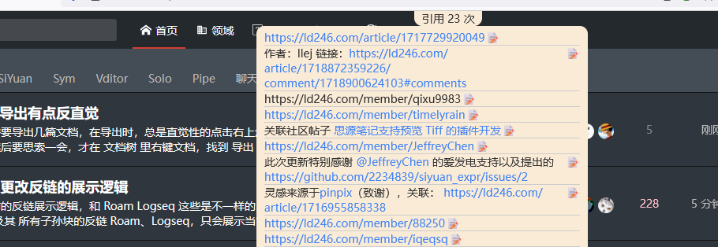
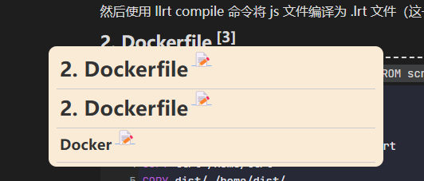
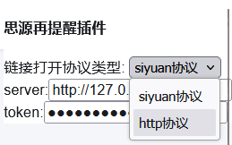

首页
思源再提醒油猴插件
终于大力出奇迹的搓出第一个版本了
脚本地址：
https://greasyfork.org/zh-CN/scripts/513405-思源再提醒
源码地址：
https://github.com/2234839/siyuan-reminder
链低社区：
https://ld246.com/article/1729516362192

目前主要功能是
1.
对于每个页面的地址会进行一次检索
2.
对于页面中的每个文本块会进行一次和思源笔记中的标题、名称、别名 进行一次全文匹配
然后对该文本块的父级添加下划线样式，最后面添加一个引用数量统计，鼠标移动到数量统计上时展示对应的块

3.
点击后面的 📝 跳转到思源中对应的地方
未来展望
现在的形态其实已经符合我的要求了，问题主要在于文本匹配算法太过暴力，也不够细致，之后想办法优化这个方面
更新记录
v1.0.0 支持通过 http 协议打开链接
建议加一个配置选项（让用户自行选择）。因为我主要使用 docker 版的思源，一般不用本地的思源软件。
